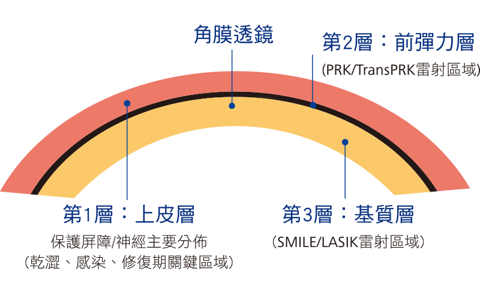
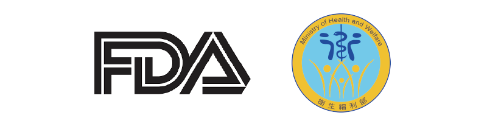
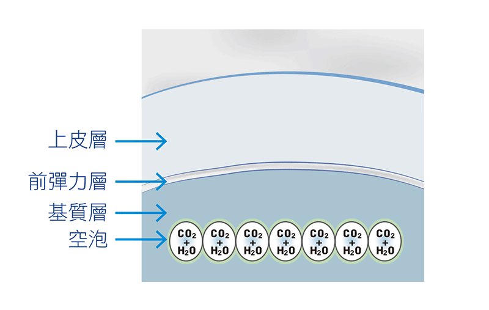
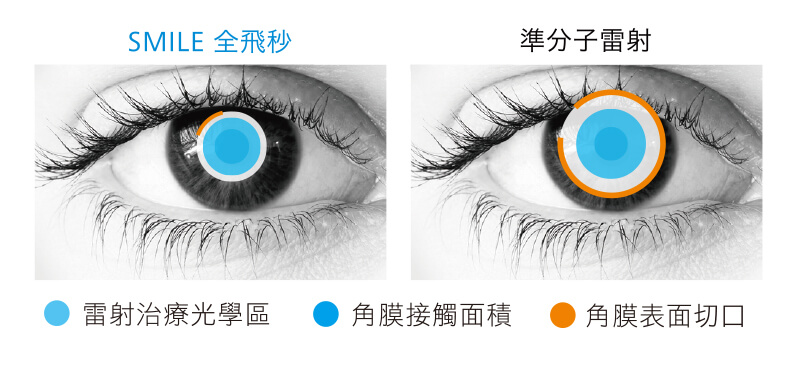
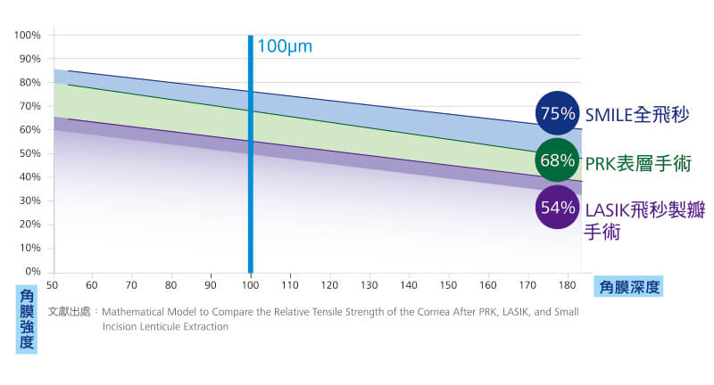
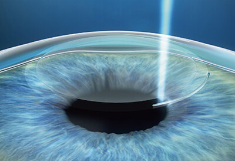
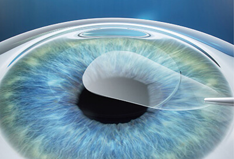
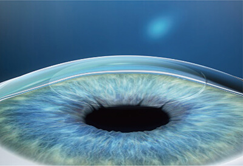

微創、快速、舒適、無味
全程由一台飛秒雷射完成治療
最常見的視力問題
近視與散光
治療以SMILE雷射-3步驟完成
SMILE核心技術
微創角膜透鏡取出
 SMILE全飛秒能夠穿透角膜表面,將雷射精準作用於角膜基質層,掃 描出近似超薄隱形眼鏡形狀的角膜,稱之「角膜透鏡」。 角膜表面只有筆尖大小的微創切口,縮短角膜修復期,安全性提升 ,更適合有運動習慣與不耐受隱形眼鏡族群。 美國＆歐盟＆台灣認證
 supplement for the VisuMax Femtosecond Laser to expand the indications to include treatment of myopia with astigmatism. This device is indicated for use in small incision lenticule extraction (SMILE) for the reduction or elimination of myopia with or without astigmatism. 結合諾貝爾獎雷射技術
 結合「極小光點、極低能量、極速脈衝」諾貝爾獎雷射技術，精準作用於角膜基質層、且不破壞周圍組織。 雷射能量聚焦於角膜基質層時會產生光分裂效應，而形成極微小的點狀空泡，透過連續性螺旋狀掃描，製作出角膜透鏡。
特色一：過程舒適
最接近角膜弧度的定位負壓環
特色二：恢復期短
減少80% 角膜表面切口
減少30% 角膜接觸面積
精準視力品質 X 減少夜間眩光
 特色三：視力穩定
相同作用深度下
維持更好的角膜強度
 治療前注意事項
・配合術前檢查並由醫師評估
・軟式隱形眼鏡停戴3-7天
・硬式隱形眼鏡停戴2週以上
・角膜塑型片至少停戴1個月
・矯正範圍:近視S1000度／散光S500度
對於手術還有問題，或是想安排檢查評估，歡迎於下方留下相關資訊
(medify留資訊處)

1.製作角膜透鏡
最短23秒使用全飛秒雷射，在角膜表面下方掃瞄出角膜透鏡。
2.取出角膜透鏡
利用全飛秒雷射在角膜表面，掃描出2-4mm的微創切口，取出角膜透鏡。


3.完成視力矯正
改變角膜弧度，達到近視、散光矯正。